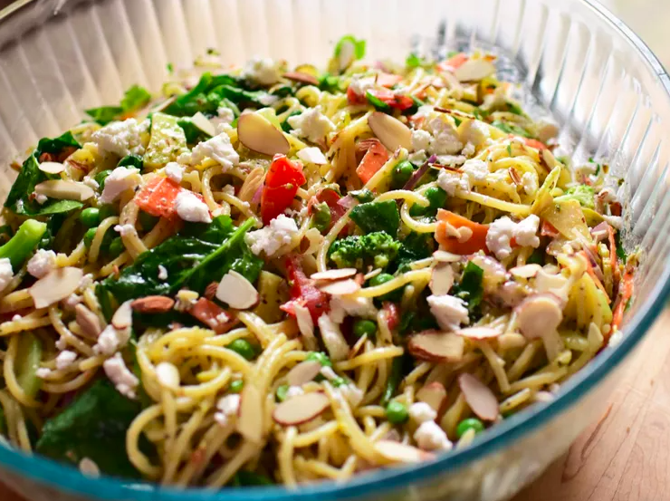

California Spaghetti Salad

PHOTO: CALIFORNIA SPAGHETTI SALAD
What Is California Spaghetti Salad?
This is an easy pasta dish that makes use of any leftover veggies you may have on hand. You can increase, decrease, or sub out any veggies you wish. Some excellent additions to this recipe would be bell peppers, mushrooms, olives, zucchini, cauliflower--the possibilities are endless! Do be sure to allow this to chill for several hours before serving. This allows the flavors to meld and really come together.
Ingredients
Dressing:
- 2 tablespoons white wine vinegar
- 2 tablespoons freshly squeezed lemon juice
- 2 tablespoons freshly grated Parmesan cheese
- 2 ½ teaspoons Italian seasoning
- 1 ½ teaspoons honey
- 1 clove minced garlic
- 1 teaspoon Dijon mustard
- 1 teaspoon dried basil
- ¼ teaspoon salt
- ¼ teaspoon freshly ground black pepper
- ⅓ cup olive oil
Salad:
- 1 pound thin spaghetti
- 1 cup baby spinach, rinsed and dried
- 1 cup chopped broccoli
- 1 cup frozen peas
- 1 carrot, grated
- ½ red onion, thinly sliced
- ½ cucumber, peeled and thinly sliced
- 1 Roma tomato, diced
- 4 ounces crumbled goat cheese, or to taste
- ¼ cup toasted sliced almonds, or to taste
- salt and freshly ground black pepper to taste
Steps
- Whisk together white wine vinegar, lemon juice, Parmesan cheese, Italian seasoning, honey, garlic, Dijon mustard, basil, salt, and pepper in a small bowl until well combined. Gradually mix in olive oil, whisking constantly. Set dressing aside.
- Bring a large pot of lightly salted water to a boil. Cook spaghetti in the boiling water, stirring occasionally, until tender yet firm to the bite, about 12 minutes.
- While spaghetti cook, prepare all the vegetables. Combine spinach, broccoli, peas, carrot, red onion, cucumber, and tomato in a large bowl.
- Drain pasta, and add to the bowl with the vegetables. Toss pasta and veggies together. Pour dressing over pasta and veggies and toss until thoroughly combined. Add in goat cheese and almonds and toss again to combine.
- Cover pasta, and chill in the fridge for at least 3 hours to overnight. Taste pasta salad, and season with more salt and pepper, if necessary.
Return Up